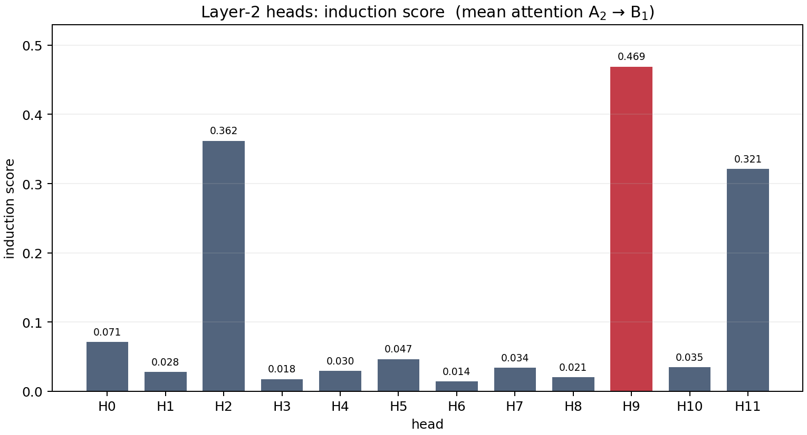
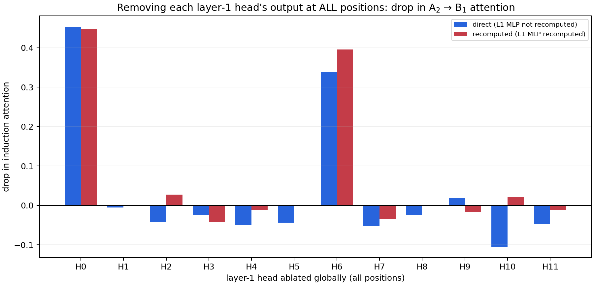
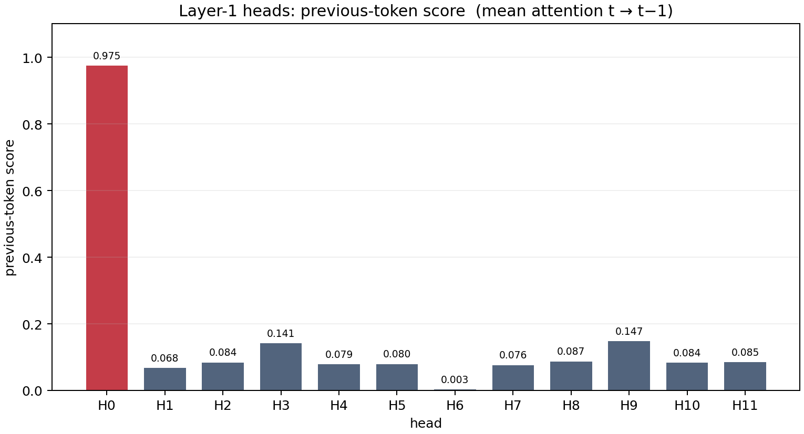
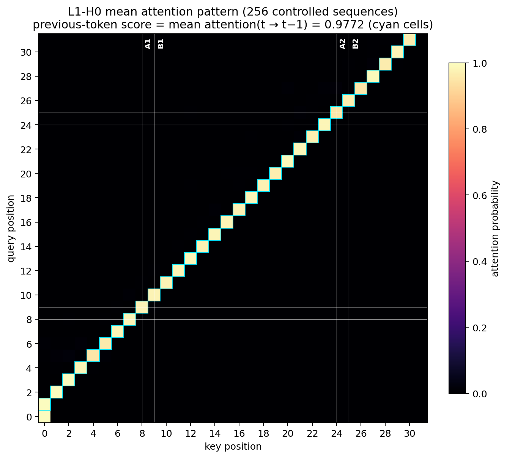
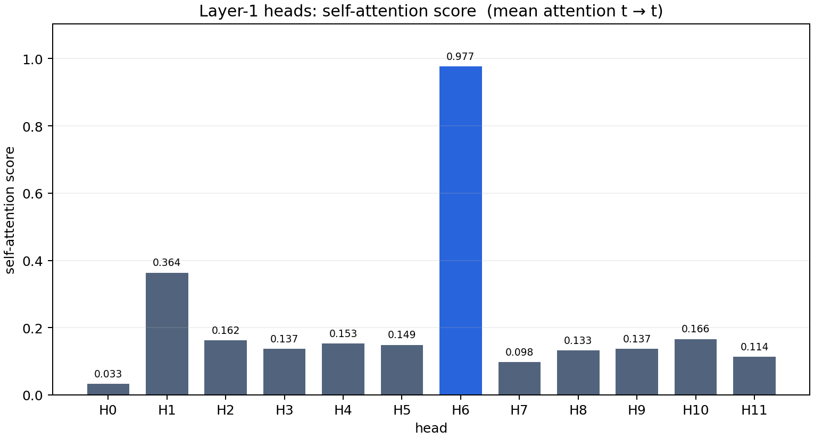
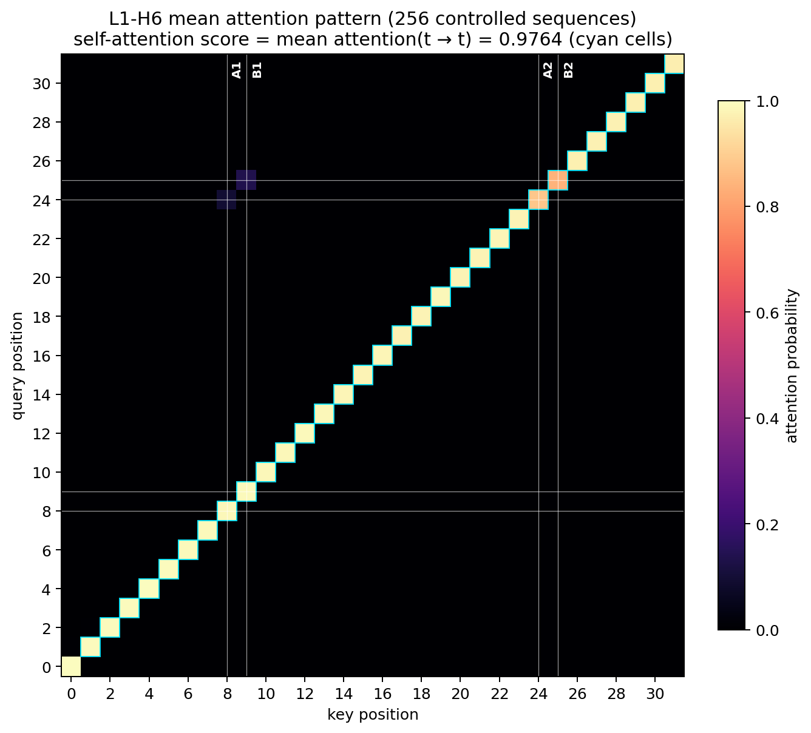
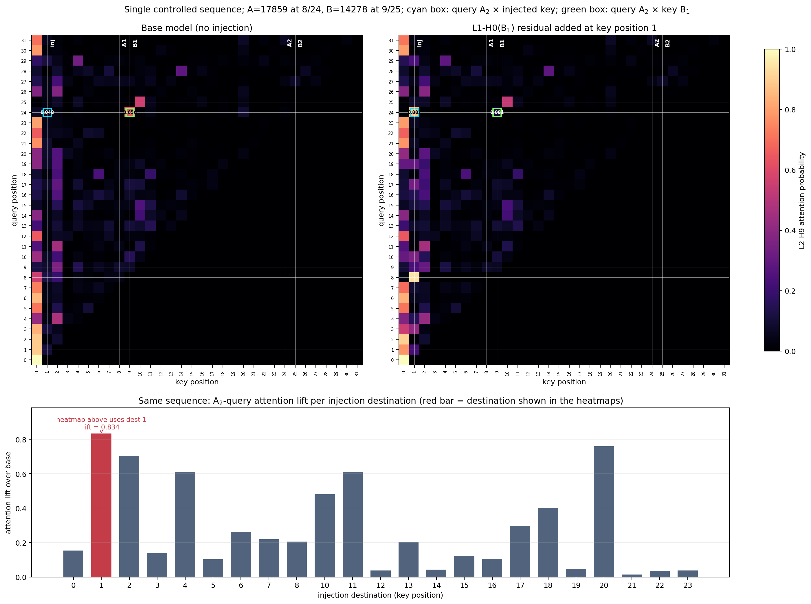
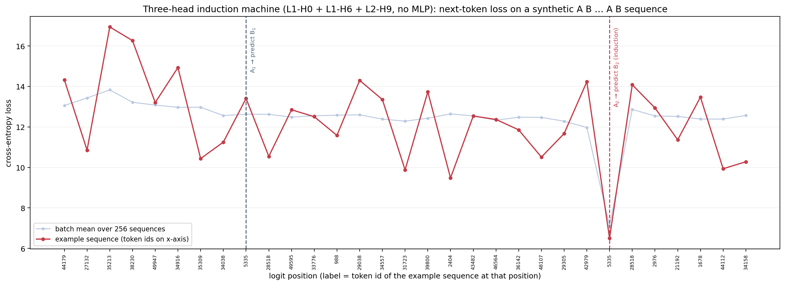
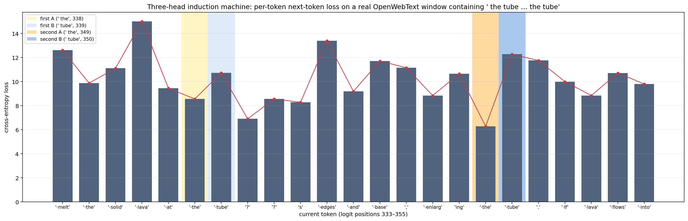

按指定图清单重画的 7 张图与 1 个表格。本页只记录每个图/表的做法、数据来源与图中各成分的含义，不作推断与结论。
out/openwebtext/induction_head_toy/cl1024_seeds_sweep/seed_777/model.pt。两层 GPT，12 heads / 层，d_model=768，词表 50304，context 1024，训练 seed 777，weight decay 0.1。… A₁ B₁ … A₂ B₂ …，A₁=位置 8、B₁=位置 9、A₂=位置 24、B₂=位置 25；A、B 只在这两对位置出现，其余 28 个位置是互不相同、且不同于 A/B 的随机 token id。生成器为 verify_openwebtext_induction_circuit.py 中的 controlled_batch。analysis/make_redrawn_figures.py（本次新写）。它复用 verify_openwebtext_induction_circuit.py 的手工前向（逐 head 残差、QK score、attention pattern），并读取已有实验输出（JSON / CSV / HTML 表）。在远程 CPU 上运行，输出目录 analysis_outputs/redrawn_figures/。visualize_three_head_induction_machine.py 一致。做法与数据。读取 analysis_outputs/openwebtext_seed777/summary.json 中的 layer2_induction_scores。该数组由 verify_openwebtext_induction_circuit.py 在 32 条受控序列（生成 seed 20260727）上测得：对第二层每个 head，取 query = A₂（位置 24）对 key = B₁（位置 9）的 attention 概率，再对 32 条序列取平均。
图的构成。横轴为第二层 12 个 head（H0–H11），纵轴为 induction score。红色柱为最大值 H9 = 0.4689，其余为灰色；柱顶标注具体数值。

做法与数据。由 make_redrawn_figures.py 现场计算（同一批 32 条受控序列，seed 20260727）。对第一层每个 head：从残差流中所有位置减去该 head 经 W_O 投影后的逐 head 输出向量，然后测量 L2-H9 的 A₂→B₁ attention。与位置级消融的区别在于：这里不指定干预位置，该 head 在每个 token 处的写入都被同时移除。两种计算方式：
direct：全局减去该 head 的输出后直接送入第二层，第一层 MLP 输出沿用未干预时的值；recomputed：全局减去后，把修改后的残差重新通过第一层的 LayerNorm 与 MLP，再送入第二层。图的构成。横轴为被全局消融的第一层 head，纵轴为 attention 下降量 = 基线 0.4689 − 消融后 attention（正值表示 attention 降低，负值表示升高）。蓝柱为 direct 变体，红柱为 recomputed 变体。数值记录：H0 全局移除 → direct 0.0155 / recomputed 0.0211（下降 0.453 / 0.448）；H6 全局移除 → direct 0.1299 / recomputed 0.0736（下降 0.339 / 0.395）；其余 head 的下降量绝对值均不超过 0.11。

做法与数据。读取 summary.json 中的 layer1_previous_token_scores（32 条受控序列，seed 20260727）。previous-token score 定义为第一层某 head 的 attention(t→t−1) 对所有可见位置与所有序列的平均，即 attention 矩阵次对角线的均值。
图的构成。横轴为第一层 12 个 head，纵轴为 previous-token score。红色柱为最大值 H0 = 0.9753；柱顶标注数值。

图 3b：H0 的 attention map。由 make_head_pattern_figures.py 现场计算：256 条受控序列（seed 20260727）上 L1-H0 的 attention 矩阵对 batch 取平均。横轴为 key 位置、纵轴为 query 位置（0–31），白色网格线与竖排标签标出 A₁(8)、B₁(9)、A₂(24)、B₂(25)。青色方框标出次对角线（t→t−1），其均值即 previous-token score = 0.9772（与图 3 的 0.9753 的差异来自 batch 大小：32 vs 256 条）。数值记录：H0 在 B₁→A₁ 格的平均 attention = 次对角线均值的一部分，整张图次对角线之外接近 0。

做法与数据。读取 analysis_outputs/openwebtext_seed777_l1h6_attention_pattern/summary.json 中的 all_heads 列表（由 analyze_l1h6_attention_pattern.py 在 128 条受控序列上测得；该批序列额外在位置 16/17 放置了一对无关 token C₁/D₁）。self-attention score 定义为第一层某 head 的 attention(t→t) 对所有位置与所有序列的平均，即 attention 矩阵主对角线的均值。
图的构成。横轴为第一层 12 个 head，纵轴为 self-attention score。蓝色柱为最大值 H6 = 0.9770；柱顶标注数值。

图 4b：H6 的 attention map。与图 3b 同一脚本、同一批 256 条序列，取 L1-H6 的平均 attention 矩阵。青色方框标出主对角线（t→t），其均值即 self-attention score = 0.9764（与图 4 的 0.9770 的差异来自 batch 与序列配置：图 4 数据源为 128 条含 C₁/D₁ 的序列）。图中还可见 A₂/A₁ 与 B₁/B₂ 之间一个较暗的 2×2 互相关块（位置 24/25 行 × 8/9 列），以及 B₂→B₁ 格。

做法与数据。用 controlled_batch 生成 1 条受控序列（seed 20260727）：A = token 17859（位置 8 与 24），B = token 14278（位置 9 与 25），其余位置为互不相同的随机 token id。手工前向到第一层，取出 L1-H0 在 B₁ 位置（位置 9）经 W_O 投影后的逐 head 残差输出向量（即 per_head_residual[:, 0, 9]，维度 768，下称 H0(B₁) writer 向量）。对 A₂ 可见的每个候选 destination（位置 0–23，排除 B₁ 自身），把该向量加到 destination 已有的残差流上（add，不替换；其他位置不变，不重算第一层 MLP），重算第二层 attention，记录 A₂ query 对该 destination 的 attention lift。上半部分双热图演示 lift 最强的 destination（本序列上为位置 1），下半部分为全部 destination 的 lift 柱状图。
图的构成。上半部分：左图为未注入的 base 模型，右图为把 H0(B₁) 向量加到 key 位置 1 之后的模型；两图均为该单条序列上 L2-H9 的完整 attention 矩阵，横轴 key、纵轴 query，刻度标签为位置编号（0–31），共用同一色标（vmin=0、vmax=1.0；矩阵中存在 attention=1 的饱和格，如 query 0 对 key 0）。白色网格线与竖排标签标出 A₁(8)、B₁(9)、inj(演示 destination)、A₂(24)、B₂(25)；青色方框 = query A₂ × 注入的 key，绿色方框 = query A₂ × key B₁，两格内直接标注数值。下半部分：横轴为注入 destination（key 位置），纵轴为 A₂ query 的 attention lift（注入后 − base）；红色柱子为上方热图所用 destination，并标注其 lift 数值。数值记录（destination = 1）：base A₂→1 = 0.048、A₂→B₁ = 0.656；注入后 A₂→1 = 0.882、A₂→B₁ = 0.081；lift = 0.834。

做法与数据。按上述三头机器定义做前向，在 256 条受控序列（生成 seed 20260730）上计算每个 logit 位置对下一 token 的 cross-entropy loss（softmax 取负对数）。实现与 visualize_three_head_induction_machine.py 相同。
图的构成。横轴为 logit 位置（0–30，位置 i 的 loss 对应预测位置 i+1 的 token），刻度标签为其中一条示例序列在该位置的 token id。红色实线为该示例序列的逐位置 loss；浅色线为 256 条序列的逐位置均值。两条竖虚线分别标出位置 8（A₁ 处，预测目标是 B₁）与位置 24（A₂ 处，预测目标是重复的 B₂，即 induction 位置）。数值记录：示例序列 A₁ 处 loss = 13.41、A₂ 处 = 6.50；batch 均值 A₁ 处 = 12.63、A₂ 处 = 7.12、其余位置平均 = 12.66。

做法与数据。读取 analysis_outputs/openwebtext_seed777_three_head_real_induction/nearby_induction_token_prediction_table.html 中的逐 token 预测表（由 make_nearby_induction_prediction_table.py 与 add_real_text_prediction_window.py 生成）。文本为一段关于 lava tube 的 OpenWebText 连续窗口；其中 ␠the（logit 位置 338）→ ␠tube（339）这一 token-pair 在位置 349/350 原样重复，构成一次 AB…AB，间隔 11 个 token。图中截取 logit 位置 333–355（23 个 token，AB…AB 两侧各多 5 个位置）。loss 列为三头机器在每个 logit 位置对真实下一 token 的 cross-entropy。
图的构成。横轴刻度标签为当前 token 的文本（· 表示 token 开头的空格；? 表示源文本中已损坏的字符），按 logit 位置 333–355 顺序水平排列。柱与红色折线是同一组 loss 数据的两种画法。背景色带标出四个特殊位置（图例中给出位置号）：淡黄 = 第一次 A（338），淡蓝 = 第一次 B（339），橙 = 第二次 A（349，induction query），蓝 = 第二次 B（350）。数值记录：第二次 A 处 loss = 6.282，第一次 A 处 = 8.562。

做法与数据。读取 harry_potter_prediction_window.html 的逐 token 表（由 make_named_pair_prediction_window.py 生成）。文本段中完整的 BPE token-pair ␠Harry ␠Potter 只出现两次：第一次在位置 331/332，第二次在 392/393，间隔 61 个 token。两个 Harry 位置的真实下一 token 都是 ␠Potter，因此 P(␠Potter) = exp(−loss)。三头机器与完整 Transformer（全部 heads + MLP）在同一文本上分别前向。
| logit 位置 | 当前 token | 真实下一 token | 三头机器 top-1（概率） | 三头机器 loss | 三头机器 P(␠Potter) | 完整模型 top-1（概率） | 完整模型 loss | 完整模型 P(␠Potter) |
|---|---|---|---|---|---|---|---|---|
| 331（第一次） | ␠Harry | ␠Potter | ␠Luther（1.51%） | 6.549 | 0.14% | ␠Potter（6.84%） | 2.682 | 6.84% |
| 392（第二次，induction query） | ␠Harry | ␠Potter | ␠Potter（3.24%） | 3.431 | 3.24% | ␠Potter（81.86%） | 0.200 | 81.87% |
针对两处观察到的现象，用独立重写的前向代码（analysis/verify_redrawn_checks.py，不调用 attention_terms，自行实现 QK score、causal mask、softmax 与逐 head 投影）做了核对：
diagnose_fig5_lift.py）确认这是单样本/单 destination 的随机性而非 bug：同一干预在 256 条 batch 上 dest 16 的 lift 均值为 0.211；在这条序列的 23 个候选 destination 中，dest 16 的 lift 排第 16（最强为 dest 1，lift 0.834）。机制上，attention 经 softmax 归一化，dest 16 注入后 QK 由 4.50 升至 9.38，但竞争的 B₁ key QK 高达 11.10 不变，故归一化后 lift 被压缩。当前图 5 已改为：上半部分用 lift 最强的 destination（本序列 dest 1）做演示，下半部分列出全部 destination 的 lift 并标出演示柱子。analysis/make_redrawn_figures.py（本地副本位于 induction_reports/analysis/）。/cephfs/quqingyu/ComfyResearch/.venv/bin/python（torch 2.6.0，CPU）。在 /cephfs/quqingyu/physicl/analysis/ 目录下执行 python make_redrawn_figures.py，输出写入 analysis_outputs/redrawn_figures/。redrawn_figures_meta.json 记录关键数值。analysis/make_head_pattern_figures.py（加载 checkpoint，计算 256 条受控序列上 L1-H0 / L1-H6 的平均 attention 矩阵）。analysis/verify_redrawn_checks.py（独立重写的前向，核对图 2 数值）、analysis/diagnose_fig5_lift.py（图 5 lift 的单样本 vs 批均值分解）。verify_openwebtext_induction_circuit.py（手工前向与受控序列生成）、analyze_l1h6_attention_pattern.py（图 4 数据）、visualize_three_head_induction_machine.py（三头机器前向）、make_nearby_induction_prediction_table.py / add_real_text_prediction_window.py / make_named_pair_prediction_window.py（图 7、8 的源表）。